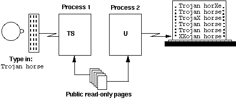
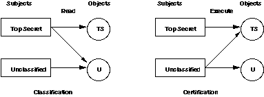

About 1976, I was explaining Multics security to a colleague at Honeywell. (This was before Multics got the B2 rating, but the mandatory access control mechanism was present.) I explained the difference between storage channels and timing channels, and said that timing channels weren't important because they were so slow, noisy, and easily clogged, that you couldn't send a signal effectively.
My friend, Bob Mullen, astounded me a few days later by showing me two processes in the CISL terminal room. You could type into one and the other would type out the same phrase a few seconds later. The processes were communicating at teletype speed by causing page faults and observing how long they took. The sender process read or didn't read certain pages of a public library file. The receiver process read the pages and determined whether they were already in core by seeing if the read took a long or short real time. The processes were running on a large Multics utility installation at MIT under average load; occasionally the primitive coding scheme used would lose sync and the receiver would type an X instead of the letter sent. If you typed in "trojan horse," the other process would type "trojan horse" a little later, with occasional X's sprinkled in the output.

Bob pointed out that noise in the channel was irrelevant to the bandwidth (Shannon's Law). Suitable coding schemes could get comparable signaling rates over many different resource types, despite countermeasures by the OS: besides page faulting, one could signal via CPU demand, segment activation, disk cache loading, or other means.
When I thought about this I realized that any dynamically shared resource is a channel. If a process sees any different result due to another process's operation, there is a channel between them. If a resource is shared between two processes, such that one process might wait or not depending on the other's action, then the wait can be observed and there is a timing channel.
Closing the channel Bob demonstrated would be difficult. The virtual memory machinery would have to do extra bookkeeping and extra page reads. To close the CPU demand channel, the scheduler would have to preallocate time slots to higher levels, and idle instead of making unneeded CPU time available to lower levels.
Bob and I did not compute the bandwidth of the page fault channel. It was about as fast as electronic mail for short messages. A spy could create a Trojan Horse program that communicated with his receiver process, and if executed by a user of another classification, the program could send messages via timing channels despite the star-property controls on data.
The rules against writing down were designed to keep Trojan Horse programs from sending data to lower levels, by ensuring that illegal actions would fault. In this case, the sender is doing something legal, looking at data he's allowed to, consuming resources or not, and so on. The receiver is doing something legal too, for example looking at pages and reading the clock. Forbidding repeated clock reading or returning fake clock values would restrict program semantics and introduce complexity.
I believe we need a mechanism complementary to the PERMISSION mechanism, called a CERTIFICATION mechanism. This controls the right to Execute software, while permission controls the Read and Write flags. A user classified Secret is not allowed to execute, at Secret level, a program certified only to Unclassified. Programs would only be certified to a given level after examination to ensure they contained no Trojan Horses. This kind of permission bit handling is easy to implement, and if the site only certifies benign programs, all works perfectly.

How do we examine programs to make sure they have no Trojan Horses? The same way we examine kernels to make sure they don't. Examining application code to ensure it doesn't signal information illegally should be easier than the work we have to do on a kernel.
Do we need to forbid write down for storage, if we allow write down via timing channels? It's inconsistent to forbid some write down paths and allow others. The main reason for preventing write down is not to stop deliberate declassification (a spy can always memorize a secret and type it into an unclassified file), it's to protect users from Trojan Horse programs leaking information. The certification approach solves this problem a different way, by providing a way to prevent execution of Trojan Horse programs.
Who should be allowed to certify a program to a given level? I think anyone who can create a program to execute at level X should be able to take a lower level program and certify it to level X. We can't stop a malicious user from creating a transmitter program, unless we forbid all program creation at level X. Other policies are possible; a site could centralize all program certification as a security officer responsibility. In any case, the OS should audit every certification and store the identity of the certifier as a file attribute.
[1] Honeywell, Multics System Administrator's Manual, AK51.
[2] Bell, D. E. and L. J. LaPadula, Computer Security Model: Unified Exposition and Multics Interpretation, ESD-TR-75-306, Hanscom AFB, MA, 1975 (also available as DTIC AD-A023588).
[3] Bell, D. E., and L. J. LaPadula, Secure Computer Systems: Unified Exposition and Multics Interpretation, Mitre Technical Report MTR-2997, rev 2, March 1976.
[4] Biba, K. J., S. R. Ames, Jr., E. L. Burke, P. A. Karger, W. R. Price, R. R. Schell, W. L. Schiller, The top level specification of a Multics security kernel, WP-20377, MITRE Corp, Bedford MA, August 1975.
[5] Ware, Willis H.,
 Security Controls for Computer Systems (U):
Report of the Defense Science Board Task Force on Computer Security,
11 February 1970,
R-609, The Rand Corporation: Santa Monica, CA.
Security Controls for Computer Systems (U):
Report of the Defense Science Board Task Force on Computer Security,
11 February 1970,
R-609, The Rand Corporation: Santa Monica, CA.
Van Vleck, T. H. poster session, IEEE TCSP conference, Oakland CA, May 1990